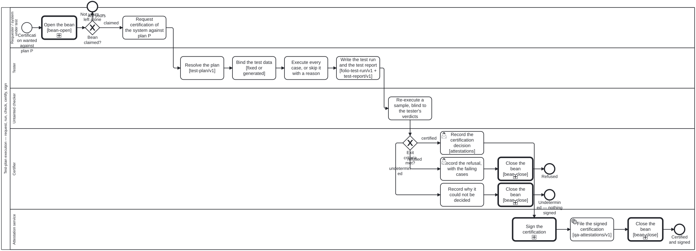

Generated from
cat-harness/skills/sdlc/sdlc-core/test-plan-execution.md— do not edit here.
Running a test plan — from a request to a signed certification
Skill id:
test-plan-execution· Package:sdlc-core· Process:test-plan-execution.bpmn· Decision:test-certification.dmn
A system is tested against a plan, by somebody who is not the system, and
certified by somebody who did not run the test. Everything below is that
sentence made operational. It is arc 3fva (bean 3o5b), proposal
docs/proposals/qa-reports-branch-and-test-process-2026-10-01.md §3.
This skill is the PROCESS. How to write a test is
test-engineer; how a folio’s content is tested is
content-test; why the
checker sees only a controlled context is
untainted-verification; how a signature is
routed by reach is qa-report-signing. Read those for
their halves — this one does not restate them.
The nodes, and who points at whom
| node | schema | where it lives |
|---|---|---|
| the plan | test-plan/v1 — schemas/sdlc/test-plan.ts | authored content (test-plan kind) |
| the system under test | the systemUnderTest facet on an actor — schemas/kg/skill-package.ts | scenarios/actors/*.json |
| the run | folio-test-run/v1 with plan + sut — schemas/sdlc/test-run.ts | the declared qa directory |
| the report | test-report/v1 — schemas/sdlc/test-report.ts | the qa-reports branch, tests/<plan>/<sut>/<run>/ |
| the certification | a judgement, qa-attestations/v1 | the declared attestations graph, on main (D2 (a), D5 default) |
The run points at the plan; the plan names no run. A plan is reused across runs and systems, so a back-pointer would turn authored content into live state. Same direction for the report → run and the certification → report.
The platform model is FHIR-free. FHIR R5 TestPlan informed test-plan/v1
and is a DOWNSTREAM export target (bean 18p1, in the FHIR IG layer). Never read a
FHIR TestPlan as the source of a plan here.
The system under test is a facet, not a role
Being tested is not a lane anybody takes on. An actor that can be executed —
agent or system, never a person or an external — declares:
// an illustration, not a declared actor
{ "id": "example-mcp-tool", "kind": "system", "reach": "internet",
"systemUnderTest": { "kind": "tool", "version": "0.1.0" } }
kind is the closed list SUT_KINDS (skill, agent, tool, machine,
ig, process; owner ruling) — the same vocabulary as a plan’s
scope.kind, so the two are compared, not translated. Reach is the actor’s
own reach, read by sutRefFor; absent is unknown, never internet.
The five lanes
| lane | role | does |
|---|---|---|
| Requester / SUT | test-requester | asks for certification of system S against plan P, naming P’s id and version |
| Tester | tester | resolves P, binds its data, executes every case, writes the run and the report |
| Untainted checker | untainted-checker | re-executes a SAMPLE of cases, blind to the tester’s verdicts |
| Certifier | certifier | applies the plan’s exitCriteria table, then records the decision |
| Attestation service | attestation-service | signs, via qa-report-signing.bpmn, and files the certification |
The tester is untainted from the system under test. The SUT may request; it
may never be the tester, the checker or the certifier, and it never writes a
verdict about itself — test-report/v1 refuses a reviewer whose id or
actor is the SUT’s actor, and test-sut-not-self-judged audits it.
Tester
- Resolve the plan. P parses as
test-plan/v1, names at least onereq:requirement (owner ruling), itsexitCriteria.decisionresolves to a decision in a.dmnthat exists, and itsscope.kindmatches the SUT actor’s facet kind. A plan that does not resolve is not run. - Bind the test data (bean
vm6m). A fixed set is a committed path and is evidence only once reviewed (isEvidence). A generated set is a template + params + seed and is never materialised into the repository. Both feed the run’sdatahash; runner, configuration and scenario bank feed itsprocesshash, and the two bases must be disjoint (buildTestRunrefuses otherwise). - Execute. Every case is executed, or recorded
skippedwith a reason. A case with no verdict at the end of a terminal run is a finding, not an omission (checkAgainstPlan). - Write the run and the report. The run records
plan {id, version}andsut {actor, version, reach}; the report rolls up per plan, never across plans (py74), andtestReportPathsays where it goes.
Untainted checker
Re-executes a sample of the cases from the plan and the data alone — never the
tester’s verdicts — and reports agree, disagree or unknown. It RULES ON
NOTHING (untainted-verification rule 3): the comparison is a fact the
certification table reads, not a verdict the checker writes.
Certifier
The gateway is computed. Pass the facts; never assert the branch — the engine refuses a hand-supplied outcome on a DMN gateway.
| fact | from |
|---|---|
reportStatus | the report’s status |
dataHashKnown | the run’s data.hash is not unknown |
unexecutedCases | checkAgainstPlan(...).filter(kind === "unexecuted-case").length |
checker | the untainted checker’s agree / disagree / unknown |
failedCases | rollup.fail |
passedCases | rollup.pass |
The table returns certified, refused or undetermined. undetermined is
the third state — a running or aborted report, an unknown data hash, an
unexecuted case, a checker that disagreed or could not run, or a report in
which nothing passed. It is never rendered as certified, and it is not a
refusal either: it says the evidence does not decide, so nothing is signed.
The certification decision is a judgement (owner ruling). The table says
whether the exit criteria are met; the certifier — a person, a specialisation
of stakeholder — records the decision, and it lives with the other
judgements under the declared attestations graph, never on the qa-reports
branch with derived results.
Attestation service
Call_Sign runs qa-report-signing.bpmn unchanged; its route (API or a human
release authority) is chosen there by the signer’s reach. Then the signed
certification is filed under attestations.
The four kg-audit criteria
Registered in KG_CRITERIA (schemas/sdlc/kg-qa.ts), implemented in
scripts/test-plan-audit.ts, recorded on the graph roll-up:
| criterion | fails when | severity |
|---|---|---|
test-plan-resolves | a plan does not parse, its exit DMN does not resolve, or a run/report names a plan, version or SUT that does not resolve (or a SUT whose facet kind is not the plan’s scope) | critical |
test-case-executed-or-skipped | a terminal report leaves a plan case with no verdict, or names a case the plan lacks | major |
test-data-hash-present | a plan-run’s data hash is unknown, or a report’s run carries none | major |
test-sut-not-self-judged | any verdict’s reviewer is the system under test | critical |
Each records n/a when there is nothing of its kind to judge — no plan, no
plan-run, no report — and never a pass over nothing.
Processes that run this skill
This skill has its own process: Test-plan execution.

| process | step(s) that name it |
|---|---|
| Test-plan execution | Request certification of the system against plan P; Resolve the plan [test-plan/v1]; Bind the test data [fixed or generated]; Execute every case, or skip it with a reason; Write the test run and the test report [folio-test-run/v1 + test-report/v1]; Re-execute a sample, blind to the tester’s verdicts; Record the certification decision; Record the refusal, with the failing cases; Record why it could not be decided; File the signed certification [qa-attestations/v1] |